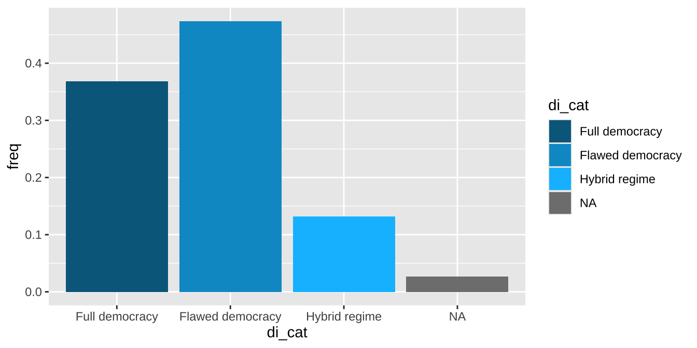
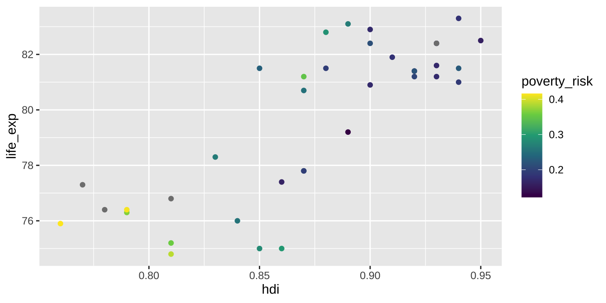
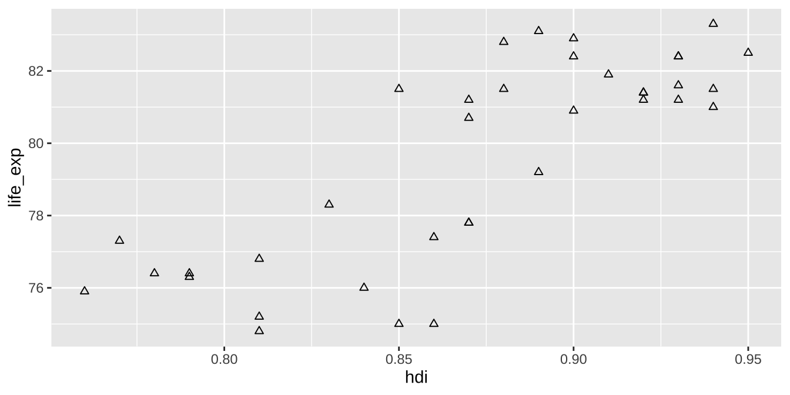
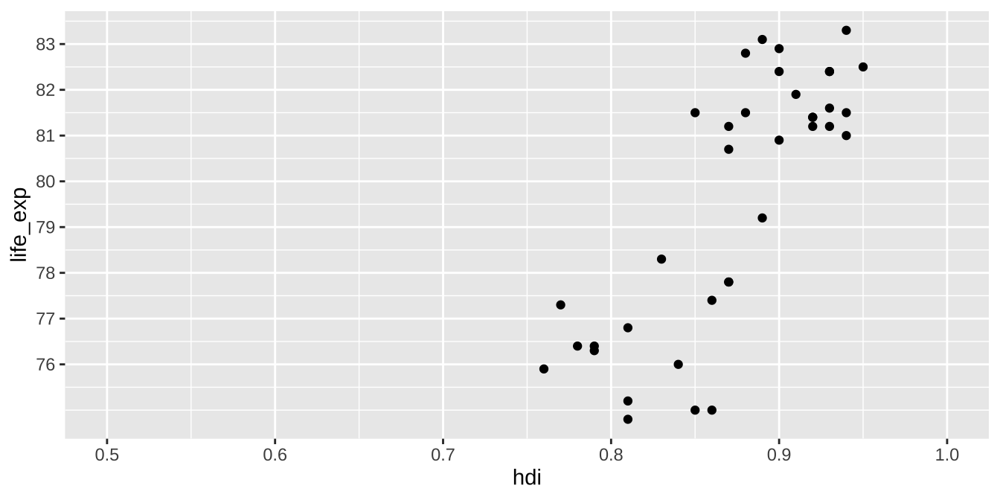
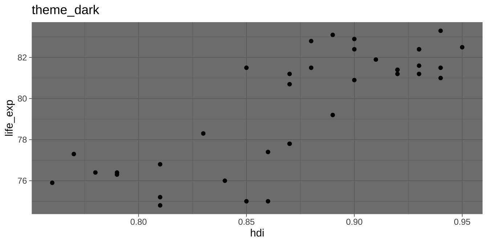
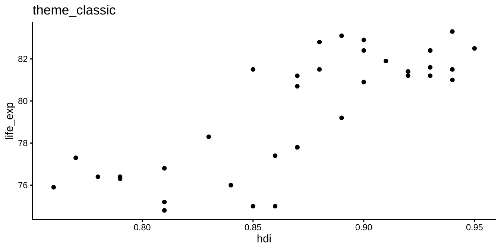

dem_countries <- countries %>%
count(di_cat) %>%
mutate(freq = n / sum(n),
di_cat = fct_relevel(di_cat,
"Full democracy",
"Flawed democracy",
"Hybrid regime"))
ggplot(dem_countries,
aes(x = di_cat, y = freq)) +
geom_col()25 Vzhled grafů
Zatímco předchozí kapitoly byly věnované struktuře grafů, v této kapitole se zaměříme na jejich vzhled. Podíváme se detailněji na upravování barev, textu i podoby všech částí grafu. Pomocníky nám kromě ggplot2 budou také balíček scales a RColorBrewer. Tyto tři balíčky jsou instalovány společně, scales a RColorBrewer ovšem nejsou aktivovány pomocí library(tidyverse).
V rámci této kapitoly se budeme opakovaně vracet ke sloupcovému grafu zobrazujícímu četnost kategorií proměnné di_cat a pro ulehčení práce si proto připravíme nový dataframe dem_countries, obsahující relativní frekvence všech kateogrií.
25.1 Barvy
Barvy jsou v R specifikované pomocí hex kódů, tedy kombinace znaku # a šesti dalších číslic a písmen. Napříkad černé barvě přísluší kód #000000, zatímco bílá #ffffff. Kódy barev jsou dostupné na mnoha místech, jakým je třeba stránka https://www.color-hex.com. Uživatelé Rstudia mohou také využít balíček colourpicker, přidávající šikovný addin (rozšíření) Rstudio, pomocí kterého je výběr barev nadmíru snadný.
Nejjednoduší je změnit barev všech sloupců najednou. Předtím, než se do toho pustíme, je ale třeba si ujasnit rozdíl mezi argumenty color a fill. Většina objektů (geomů) pomocí kterých ggplot2 je složena ze dvou částí: obrysu a výplně. Barvu obrysu kontrolujeme pomocí argumentu color, barvu výplně pomocí fill. Protože u sloupcových grafů je dominantní výpln sloupců, použijeme pro změnu vzhledu právě argument fill, a to přímo uvnitř funkce geom_col():
ggplot(dem_countries,
aes(x = di_cat, y = freq)) +
geom_col(fill = "#008080")
TipAktualizace výchozího vzhledu geomů
Pokud by se nám výše použitá barva líbila a chtěli jsme ji použít u všech, není nutné doplňovat fill = "#008080" u každého grafu. Můžeme si ušetřit čas využít funkce update_geom_defaults().
Jak již název napovídá, tato funkce upravuje výchozí vzhled geomů. Pro zelené sloupce ve všech grafech stačí na začátek našeho kódu přidat
update_geom_defaults(geom = "col", new = list(fill = "#008080"))Obdobně je možné upravovat nastavení všech geomů:
update_geom_defaults(geom = "point", new = list(fill = "#008080", size = 12))
update_geom_defaults(geom = "text", new = list(color = "grey", size = 12))Komplexnějším úkonem je aplikace palety barev. Základní nabídku palet, kterou přínáší balíček RColorBrewer, je možné zobrazit pomocí funkce display.brewer.all() (nesmíme ale zapomentou nejdříve balíček aktivovat!):
library(RColorBrewer)
display.brewer.all()Palety jsou rozděleny do tří skupin. První skupinou jsou takzvané sequential palety, tedy palety vhodné pro vizualizaci stupňující se intenzity. Hodí se zejména pro jednopolární proměnné, kde nula reprezentuje absenci, jako například podíl nezaměstnaných. Druhou skupinou jsou qualitative palety, vhodné pro nominální proměnné, jako je převažující náboženská skupina v zemi. Poslední skupinou jsou diverging palety, určené pro bipolární proměnné. Tato skupina palet je vhodná pokud nízké hodnoty reprezentují opak vysokých hodnot. Příkladem bipolární proměnné je například škála demokracie-autoritářství.
Pro aplikaci palety musíme nejdřív jednotlivé kategorie na ose X namapovat na barvu výplně (fill). Poté ke zbytku kódu přidáme funkci scale_fill_brewer(). Ta je součástí širší rodiny funkcí, začínajících slovem scale_, které kontrolují vzhled jednotlivých dimenzí. Jelikož v tuto chvíli pracujeme s dimenzí fill, používáme skupinu funkcí scale_fill. A protože je naším cílem využít paletu z RColorBrewer, funkce kterou hledáme je právě scale_fill_brewer():
ggplot(dem_countries,
aes(x = di_cat, y = freq, fill = di_cat)) +
geom_col() +
scale_fill_brewer(palette = "RdYlGn")Funkce scale_color_brewer() má několik užitečných argumentů. Prvním z nich je direction, pomocí které je možné kontrolovat orientaci barev. V našem případě by bylo pravděpodobně vhodnější, aby země s rozvinutější mírou demokracie byly označeny zeleně. Toho docílíme pomocí direction = -1. Druhým z užitečných argumentů je na.value, pomocí které je možné kontrolovat barvu sloupce reprezentující chybějící hodnoty (NA). V tuto chvíli ja barva NA sloupce stejná jako barva pozadí grafu, což není úplně ideální. Použijeme proto tmavší odstín šedé, s hex kódem #696868:
ggplot(dem_countries,
aes(x = di_cat, y = freq, fill = di_cat)) +
geom_col() +
scale_fill_brewer(palette = "RdYlGn",
direction = -1,
na.value = "#696868")Pokud nám nevyhovuje žádná z předpřipravených palet, je možné barvy jednotlivých kategorií zadat i ručně, k čemuž využijeme funkce scale_fill_manual():
ggplot(dem_countries,
aes(x = di_cat, y = freq, fill = di_cat)) +
geom_col() +
scale_fill_manual(values = c("#00688B", "#009ACD", "#00BFFF", "#7D7D7D"))
Nakonec je dobré zmínit ještě speciální typ barevných palet, takzvané continuous palety. Ty slouží k barevné vizualizaci spojitých proměnných. ggplot2 nabízí dvě continuous palety, gradient pro unipolární proměnné a viridis pro bipolární. Obě je možné aplikovat pomocí funkcí scale_color_continuous() nebo scale_fill_continuous() podle toho, zda jde o barvu obrysu nebo barvu výplně:
ggplot(countries,
aes(x = hdi, y = life_exp, color = poverty_risk)) +
geom_point() +
scale_color_continuous(type = "viridis")
Pokud nám nevyhovuje žádná z palet, je možné zvolit barvy vlastní, a to hned dvěma způsoby. Prvním možností je funkce scale_color_gradient() (případně scale_fill_gradient()), pomocí které můžeme barvu minima a maxima. Funkce interpoluje barvu zbylých hodnot:
ggplot(countries,
aes(x = hdi, y = life_exp, color = poverty_risk)) +
geom_point() +
scale_color_gradient(low = "#33A02C", high = "#E31A1C")Druhou možností je funkce scale_color_gradient2() (a analogicky scale_fill_gradient2()), pomocí které je možné specifikovat tři barvy: minima, maxima a středu. Poté jen stačí specifikovat střední hodnotu barevné škály:
ggplot(countries,
aes(x = hdi, y = life_exp, color = poverty_risk)) +
geom_point() +
scale_color_gradient2(low = "#33A02C", mid = "#D6D62D", high = "#E31A1C",
midpoint = 0.25)25.2 Tvar
U některých geomů, například geom_point(), je možné určit určit jejich tvar a to pomocí argumentu shape. R obsahuje 26 základních tvarů, které je aplikovat pomocí jejich číselných kód. Vychozím tvarem je ten s hodnotou 1:
Tvar objektů je možné specifikovat pomocí stejných pravidel, jako jejich barvu. Plošně je možné zvolit tvar pomocí argumentu shape, v případě škál bychom využili funkce scale_shape_manual():
ggplot(countries,
aes(x = hdi, y = life_exp)) +
geom_point(shape = 24)
25.3 Velikost a průhlednost
Průhlednost objektu je možné upravovat argumentem alpha, se kterým jsme již letmo setkali v předchozí kapitole (Sekce 23.3). alpha nabývá hodnot od 0 (zcela průhledná) do 1 (zcela neprůhledné). Argument size poté slouží ke kontrolove velikosti geomů a může nabývat jakkékoliv pozitivní hodnoty:
ggplot(countries,
aes(x = hdi, y = life_exp)) +
geom_point(alpha = 0.5, size = 3)25.4 Formátování os
O formátování vertikální a horizontální osy stará rodina funcí scale_x a scale_y. Pokud je na dané ose numerická proměnná, použijeme funkci scale_x_continuous() (resp. scale_y_continuous()). Pokud jde o proměnnou kategorickou, využijeme funkcí scale_x_discrete() a scale_y_discrete().
U numerických proměnných jsou dvěma nejužívanějšími argumenty limits a breaks. Prvním z nich lze určit rozpětí osy, a to vektorem obsahujícím spodní a horní limit. Pokud bychom chtěli omezit rozpětí horizontální osy mezi hodnotami 0.5 a 1, použijeme limits = c(0.5, 1). Pro určení pouze jednoho z limitů nahradíme druhou hodnotu NA, např. c(NA, 1). Druhým argementem, breaks, poté upravíme hodnoty, které se na ose ukazují:
ggplot(countries,
aes(x = hdi, y = life_exp)) +
geom_point() +
scale_x_continuous(limits = c(0.5, 1)) +
scale_y_continuous(breaks = 76:83)
Kromě toho, jaké hodnoty se na osách zobrazí, je možné upravovat i jejich formát. K tomu nám pomůže balíček scales, v kombinaci s argumentem labels. Tento balíček obsahuje sadu funkcí, jako například number_format(), percent_format() nebo date_format(). Funkcí number_format() můžeme přidat prefix (argument prefix()), sufix (sufix), převést proměnnou na jiné jednotky (scale) nebo upravit počet desetinných míst accuracy a jejich oddělovač (decimal.mark). Funkce percent_format() funguje obdobně, automaticky ale také převádí desetinná čísla na procenta:
library(scales)
ggplot(countries,
aes(x = hdi, y = life_exp)) +
geom_point() +
scale_x_continuous(limits = c(0.5, 1),
labels = percent_format(accuracy = 1, suffix = " %")) +
scale_y_continuous(breaks = 76:83,
labels = number_format(suffix = " let"))V argumentu labels je možné použít i další funkce. Pro formátování textu je možné využít například funkcí, se kterými jsme se setkali v kapitole věnované stringům (Sekce 18.3):
ggplot(dem_countries,
aes(x = di_cat, y = freq)) +
geom_col() +
scale_x_discrete(labels = str_to_upper)25.5 Nadpisy, názvy a poznámky
Všechny textové popisy grafů je možné ovládat pomocí funkce labs(). Pomocí ní můžeme určit nadpis grafu (title), podnadpis (subtitle), poznámky (caption) a názvy všech použitých dimenzí:
ggplot(countries,
aes(x = hdi, y = life_exp, color = poverty_risk)) +
geom_point() +
labs(title = "Do People Live Longer in Developed Countries?",
subtitle = "HDI vs Life Expectancy",
caption = "Data source: Eurostat 2018",
x = "Human Development Index",
y = "Life Expectancy at Birth",
color = "% in risk\nof poverty")
TipText na více řádcích
Pokud chceme aby text v grafu byl zalomený na více řádků, použijeme zvláštní znak \n, například "% in risk\nof poverty".
25.6 Celková tématika grafu (themes)
Poslední sekce této kapitoly je věnovaná celkové tématice grafu (anglicky theme). Pomocí funkce theme je možné ovládat všechny aspekty grafu, které nebyli popsány výše. ggplot2 obsahuje sadu předpřipravených tématik, které můžeme aplikovat na každý graf:


Pro aplikaci vybrané tématiky stačí připojit její funkci ke grafu:
ggplot(countries,
aes(x = hdi, y = life_exp)) +
geom_point() +
theme_linedraw()Kromě předpřipravených tématik je možné také upravovat vzhled grafu manuálně, pomocí funkce theme(). Tato funkce má několik desítek argumentu, které nám umožní kontrolovat i ty nejmenší detaily. My si ukážeme pouze ty nejpoužívanější.
Prvním aspektem, který budeme chtít často kontrolovat, je pozice legendy. Toho docílíme pomocí argumentu legend.position. Ten může nabývat buď jedné ze čtyř předpřipravených pozic (top, bottom, left a right). Alternativně je možné použít dvojici koordinátů, oba koordináty mohou nabývat hodnot mezi hodnotami 0 a 1. Dvojice c(1,1) umístí legendu pravého horního rohu, c(0,0) do levého horního rohu a c(0.5, 0.5) přímo na střed.
Dále je možné upravovat font textu, a to pomocí argumentu text. Ten přijímá funkci element_text(), pomocí které je možné specifikovat font (family), velikost (size) nebo zda má být text kurzívou/tučně (face). Pokud je naším cílem upravit pouze některý text, je možné využít cílené argumenty jako title nebo axis.text.x)
Barvuv pozadí grafu je možné ovládat pomocí grafu. Každý graf je rozdělený do dvou částí. Panel je vnitřní oblast grafu, ve které se nachází geomy, zatímco plot je vnější oblast obsahující popisky a legendu. Vlastnosti obou se dají upravovat nezávisle na sobě pomocí argumentů panel.backround a plot.backround. Pokud náš graf obsahuje legendu, můžeme její vzhled upravit obdobně pomocí argumentu legend.backround.
Návodné čáry grafu kontroluje skupina argumentů panel.grid. Čáry se rozlišují na primární (panel.grid.major) a sekundární (panel.grid.minor). Upravovat také můžeme pouze návodné čáry pro specifickou osu pomocí panel.grid.major.x a panel.grid.major.x (resp. panel.grid.major.y a panel.grid.minor.y). Vzhled čar je možné upravit pomocí funkce element_line(). Pro odebrání čáry, nebo jakéhokoliv jiného elementu grafu, je možné využít funkce element_blank().
ggplot(countries,
aes(x = hdi, y = life_exp, color = poverty_risk)) +
geom_point() +
theme(legend.position = c(0.9, 0.3),
text = element_text(family = "Calibri", size = 12),
panel.background = element_rect(fill = "#F5DDB1"),
plot.background = element_rect(fill = "#F5CE87"),
legend.background = element_rect(fill = "#F5CE87"),
panel.grid.major = element_line(linetype = "dashed"),
panel.grid.minor = element_blank())
TipUpravování výchozích tématik
Pokud chceme upravit jednu z výchozích tématik, například theme_linedraw(), použijeme obě funkce za sebou:
ggplot(countries,
aes(x = hdi, y = life_exp, color = poverty_risk)) +
geom_point() +
theme_linedraw() +
theme(legend.position = "bottom")25.7 Fonty
Jedním z nejvíce problematických aspektů grafů vytvořených v R byli historicky fonty. Není tomu tak dávno, co bylo velmi obtížné přesvědčit R, aby rozeznalo fonty nainstalované na našem počítači a správně je vykreslilo do grafu. Naštěstí se situace v posledních letech výrazně zlepšíla.
Pro správné fungování fontů budeme potřebovat dva balíčky, systemfonts a ragg. První z balíčků Rku ukáže, kde jsou na našem počítači nainstalované fonty, ten druhý se postará o jejich správné zobrazení. Začneme tím, že oba balíčky nainstalujeme:
install.packages(c("systemfonts", "ragg"))Jakmile jsou oba balíčky nainstalované, restartujeme Rko. Poté můžeme použít funkci system_fonts() k zobrazení seznamu všech fontů, které máme na našem počítači k dispozici. Primární je sloupeček family, obsahující název fontu. Ten můžeme využít k nastavení fontu v našich grafech. Například:
theme(text = element_text(family = "Calibri"))Pokud se písmo pořád nezobrazuje, je problém pravděpodobně v softwaru, který náš počítač používá k nakreslení grafu. I to má ale jednoduché řešení. Zde do hry vstupuje druhý z nainstalovaných balíčků, ragg, který nám umožňí vykreslit grafy pomocí grafického nástroje AGG. Nejjednoduším způsobem, jak ho použít, je nastavit AGG jako výchozí grafický nástroj v Rstudiu. Stačí na horní liště otevřít záložku Tools a poté Global Options -> General -> Graphics. Zde nastavte Backend na AGG. A je to! Restartujte Rstudio a graf je i s naším fontem na světě.